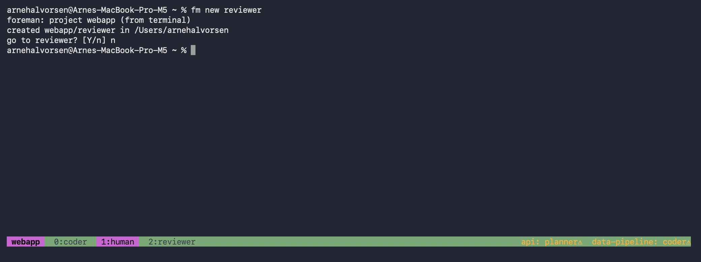
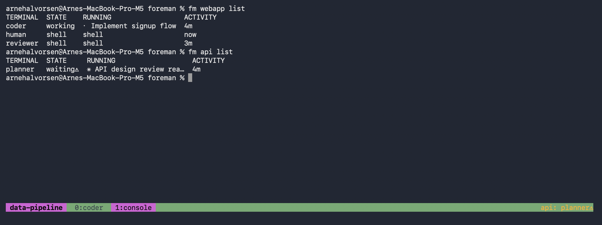
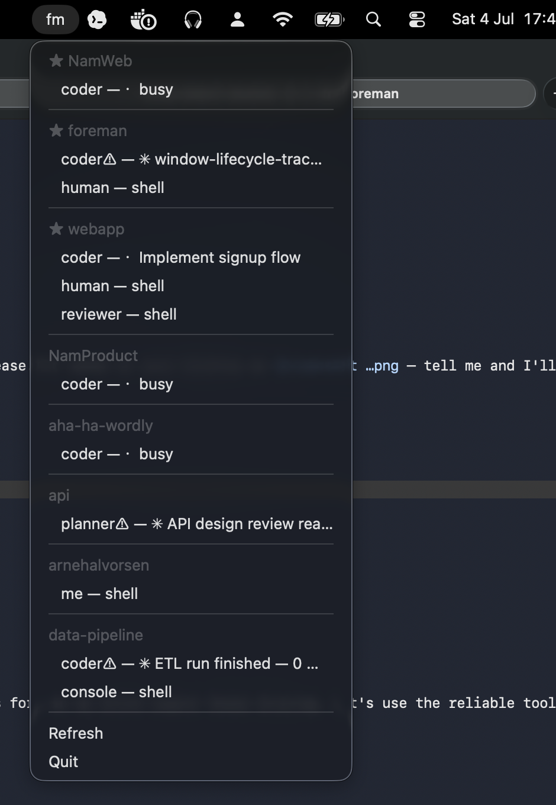
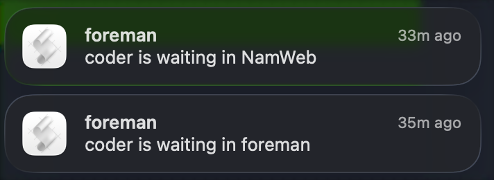

foreman
Organize terminals by project, on top of tmux. Identity badges, one view at a time, agent state at a glance.
The real star is the terminal server: tmux keeps your terminals alive in the background — the windows on your screen are just viewers. foreman adds the missing semantics: every terminal is a named participant in a project. Close a window by accident? Nothing happened.
You always know what you're typing into
Every managed terminal wears a colored badge with its project's name — and the right side of the status bar tells you when an agent in another project wants your attention.

Working in webapp (badge, window tags). fm new reviewer infers the
project from the terminal you're in and offers to take you there. Bottom right, the ticker:
two other projects want attention.
Agent state at a glance — without attaching
AI agents made terminal life crowded: several projects at once, each with
agent terminals and manual shells. foreman list shows who's working, who's
waiting for you, and who's done — computed live from the tmux server, nothing stored.

Asked from a third project (data-pipeline's badge below):
webapp's agent is deep in work, api's planner is waiting⚠ for you.
Two commands do most of the work
new starts a named terminal in the right directory with the
role's command already running; go moves a project's view to wherever you are
— navigating never multiplies terminals, and windows foreman opens are cleaned up again
when their view moves on.
$ fm new coder # infers the project from where you are created webapp/coder in ~/code/webapp go to coder? [Y/n] ⏎ # and you're there $ fm api go planner --window # open another project's agent beside you $ fm list # the whole floor at a glance
The menu bar knows too
The explorer sits in the menu bar: every project and participant, states included — click one and its view lands in a Terminal window.

Pinned projects (★) also notify you the moment their agent starts waiting.
…and it speaks up when you're needed
Pin the projects you care about. The moment their agent finishes a turn or stops at a question, macOS tells you — while everything else stays glanceable in the ticker and menu, never interrupting.

Two projects raise their hands — real notifications from the day foreman was built (the second one is the agent building it).
Install
$ brew install tmux # the engine $ git clone https://github.com/Aha43/Foreman && cd Foreman $ make install # foreman + fm + fm-explorer into ~/.local/bin
macOS for the full experience (Terminal integration, menu bar, notifications); the core CLI is portable Go over tmux.